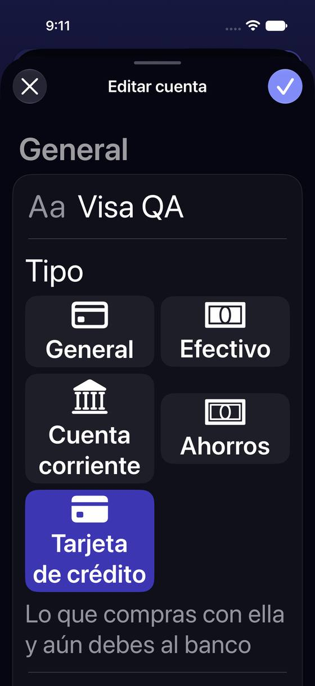
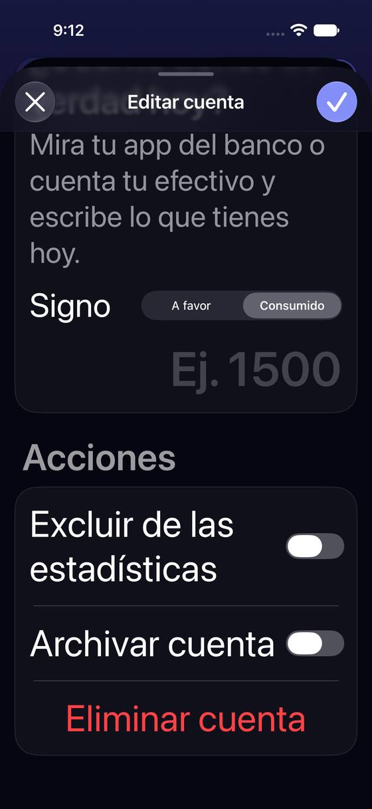
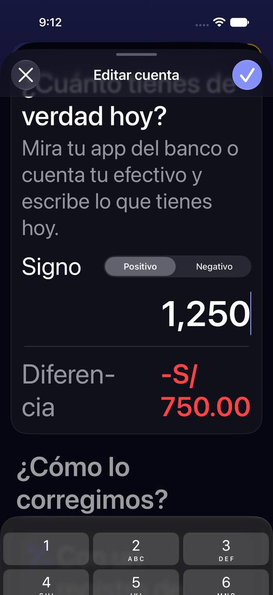
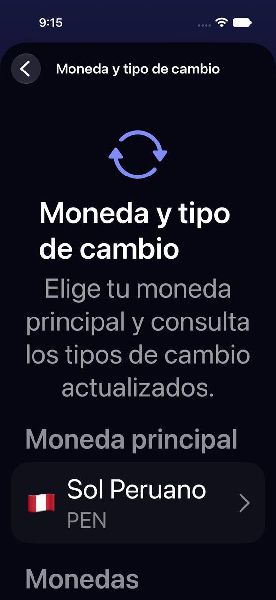
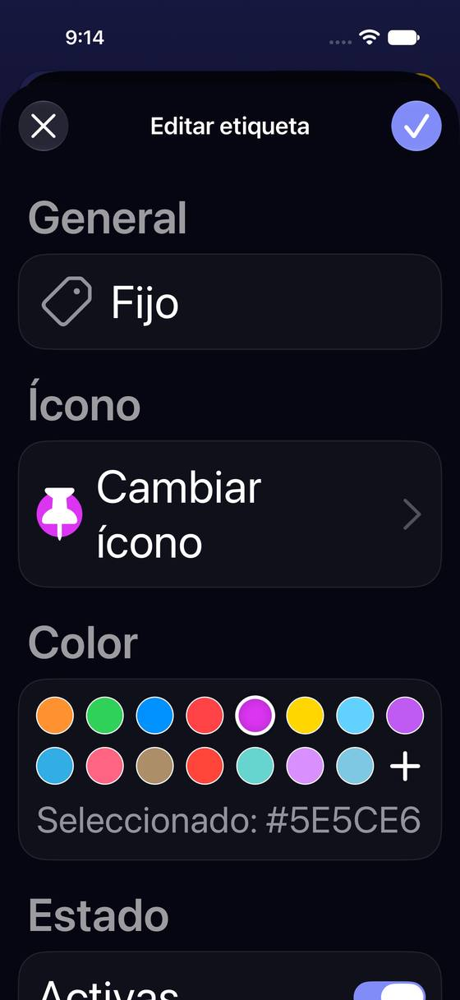
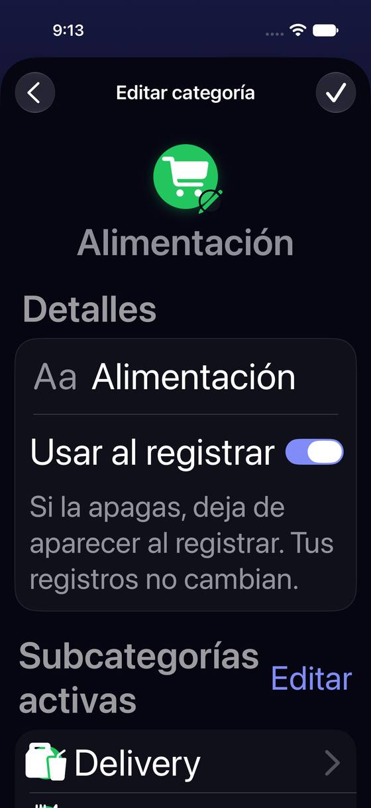
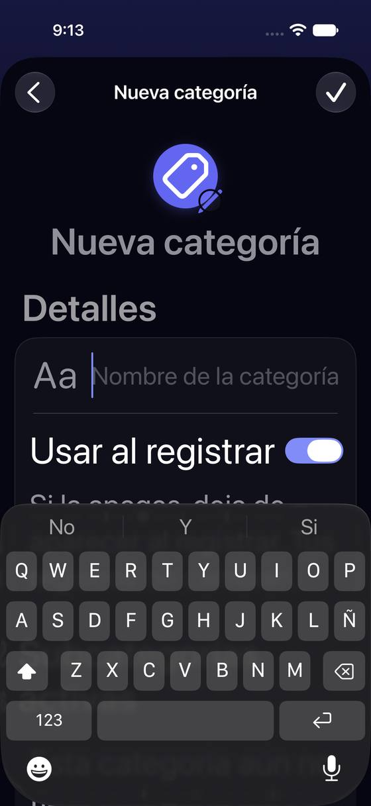

Perfiles y eficiencia
Los siete perfiles simulados como lentes sobre lo que hay hoy, el texto grande, lo medido y lo supuesto sobre rendimiento, y los hallazgos que no llegan a problema prioritario.
Lente de perfiles sobre lo de hoy
Perfiles simulados, no entrevistas Riesgo de que ese perfil se trabe en esa parte. alto · medio · bajo.
| Perfil | 1 · Archivar una tarjeta | 2 · Ordenar categorías | 3 · Crear una categoría | 4 · Ajustar el saldo | 5 · El número tapa el nombre | 6 · Monedas secundarias | 7 · Las palabras | 8 · Texto grande |
|---|---|---|---|---|---|---|---|---|
| P1 · Migrante de Excel Trae sus cuentas, saldos y categorías de una hoja; quiere ordenarlas como las tenía. | pierde su historia | no puede traer su orden | lento | cuadra, con cuidado | no reconoce su cuenta | — | — | — |
| P2 · Principiante abrumado No sabe qué es «saldo de partida», «subcategoría», «necesidad» ni «moneda secundaria». | no entiende el pie | dos órdenes | no sabe qué es una subcategoría | no sabe qué es «saldo de partida» | — | cree que toca sus cuentas | cuatro palabras | — |
| P3 · Anotador rápido que no lee Quiere su categoría de siempre arriba y corregir el saldo en un toque. | no llega al fondo | su categoría está lejos | alerta | toca Guardar sin ver la opción | — | no entra | — | — |
| P4 · Experto de otra app Espera reordenar, archivar y renombrar sin perder historial, y saber qué cuenta en cada total. | lo encuentra, se sorprende | espera reordenar | lo resuelve | — | — | — | incoherente | — |
| P5 · Llega por una invitación de grupo Ve las categorías y cuentas «Sistema» de Grupos; casi no toca esta zona. | — | — | — | — | — | — | — | — |
| P6 · Varias monedas y tarjeta Soles, dólares y una Visa con línea en dólares: archiva tarjetas y sigue el tipo de cambio. | tarjetas que rota | — | — | signos distintos en la tarjeta | dos tarjetas = dos números | ¿declaro aquí mi cuenta en dólares? | — | — |
| P7 · Texto grande, a veces en iPad Texto de accesibilidad, VoiceOver; listas largas y formularios largos. | cinco pantallas | desplazar el selector | tres pantallas | teclado + texto grande | número truncado | pantalla tapada | VoiceOver lee códigos | no ve sus cuentas ni una etiqueta |
Texto grande (AX3)
Las mismas pantallas con el texto de accesibilidad «AX3». Lo que se ve aquí alimenta los problemas 1, 4 y 7.
Lo que falla con texto grande va al problema 8 (Cuentas sin nombres, Etiquetas sin su última fila). Además: el selector de signo («A favor / Consumido», «Positivo / Negativo») no crece con el texto, y en la ficha de la cuenta «Acciones» queda todavía más lejos. Categorías, subcategorías y Moneda parten bien los textos largos.










Eficiencia: lo medido
| Qué | Cifra | Cómo se midió |
|---|---|---|
| Abrir Ajustes › Cuentas sin registros (semilla «sin-registros», 2 cuentas) | 32 ms de mediana (31,6-32,8; la primera, 86) | Marca PERF ajustes-cuentas de la app (LoadTimeMarks: empieza y acaba en el onAppear de la lista, alrededor de setContext, que lee cuentas y todos los registros), leída del registro del simulador. 7 aperturas seguidas en el mismo arranque. |
| Lo mismo con dos años de registros (semilla «realista») | 113 ms de mediana (110,9-114,8; la primera, 154) | Igual: 7 aperturas. |
| Lo mismo con diez años de registros (semilla «pesado») | 447 ms de mediana (442,7-447,9; la primera, 495) | Igual: 7 aperturas. Crece con el número de registros, no con el de cuentas (son 2 en las tres semillas): la lista lee todos los registros para calcular saldos, en el hilo principal. |
| Abrir el formulario de una cuenta, Categorías, Etiquetas o Moneda | sin medir | No tienen marca de carga. |
Todo en Debug y en el simulador, que no es un iPhone en Release: sirve para comparar volúmenes, no como tiempo real.
Eficiencia: hipótesis (sin medir)
Hipótesis Leído en el código. Ninguna es un refactor propuesto: son sitios a medir si se notan lentos con muchos datos.
| Qué pasa | Dónde | Qué se espera y qué medir |
|---|---|---|
| Ajustes › Cuentas lee todos los registros al abrir y, en cada pintado, calcula el saldo de cada fila recorriéndolos enteros (filas × registros). El resultado no se guarda entre pintados. | AccountsSettingsListViewModel.loadData (líneas 138-151, «Perf-note»), formattedBalance (166-182) llamado desde cada fila | La marca de carga mide la lectura (tabla de arriba); el coste por pintado no lo mide. A medir con el instrumento SwiftUI al reordenar, que repinta en cada arrastre. |
El formulario de cuenta lee todos los registros, pagos programados, favoritos y borradores al abrir; showAdjustmentMode recorre todos los registros cada vez que se pinta. | AccountFormViewModel.swift:493-541, :758-764 | Con diez años de datos puede notarse al abrir y al escribir cada dígito del saldo. Medir con la semilla «pesado». |
| Guardar una subcategoría lee todas las subcategorías de la app para reordenar las de una categoría. | SubcategoryDetailView.reorderSubcategoriesAlphabetically (líneas 405-420) | Bajo: ~62 filas. Solo importa con cientos. |
| Añadir una moneda secundaria baja un año de tipos de cambio con la pantalla tapada. | CurrencySettingsView.loadHistoricalRatesForCurrency | Con red lenta, la pantalla tapada dura lo que tarde; sin red, lo que tarde en fallar. No medido en un iPhone. |
Eliminar una etiqueta cuenta sus registros recorriendo la relación (tag.transactions?.count), que carga cada registro. | TagFormView.deleteSection | Bajo con 200 registros; a medir con una etiqueta en miles. |
Hallazgos secundarios
No llegan a problema prioritario (o ya van dentro de uno). Severidad: alta · media · baja.
| Hallazgo | Evidencia | |
|---|---|---|
| La lista de cuentas dice los saldos con el código («PEN 2,000.00», «USD 255.00») y el formulario y el Panel con el símbolo («S/ 2,000.00»). | Capturas c07 y c08; AccountsSettingsListViewModel.formattedBalance usa info.code | |
| Moneda y tipo de cambio ya trae USD y EUR como secundarias sin que nadie las elija. | Captura d01 | |
| Sin ninguna secundaria, «Tipo de cambio» enseña las dos primeras divisas de la lista, que no tienen por qué importar a nadie. | CurrencySettingsView.exchangeRatesSection (CurrencyCode.allCases.prefix(2)) | |
| «+» de Categorías crea e inserta una categoría vacía antes de escribir nada; si la app se cierra a mitad (tras guardar una subcategoría), puede quedar una categoría sin nombre. | CategoriesSettingsListViewModel.createAndOpenNewCategory; SubcategoryDetailView.saveSubcategory guarda el contexto (línea 393). Hipótesis: no reproducida | |
| La cabecera de una categoría nueva dice «Nueva categoría» con el icono por defecto hasta escribir el nombre; la de una subcategoría nueva, el nombre de la categoría madre. | Capturas k06 y k08 | |
| El selector de necesidad se titula «Gastos por necesidad» y la fila que lo abre «Necesidad». | Capturas k04 y k05 | |
| La X del formulario de etiqueta cierra sin preguntar aunque haya cambios (Cuentas y Categorías sí preguntan). Va en G3. | TagFormView, toolbar | |
| En la lista de etiquetas y en la de cuentas, el alto de la lista se calcula a mano (filas × alto fijo): con texto grande o nombres de dos líneas, la última fila puede quedar cortada. | TagsSettingsListView.swift:127, AccountsSettingsListView (.frame(height:) con @ScaledMetric). Ver capturas AX3 | |
| El número de cuenta acepta el número completo de una tarjeta y lo guarda tal cual. Va en el problema 5. | Captura c14 | |
| En el iPad, la ficha de una cuenta se abre en una hoja centrada de media pantalla: para llegar a «Acciones» hay que desplazar más que en el iPhone, con media pantalla libre a los lados. | Captura ipad-c08 | |
| Al crear una tarjeta, Guardar ofrece «Tu cuenta puede tener más de una divisa» antes de volver: bien explicado, pero se ofrece a toda tarjeta nueva aunque no lo necesite. | Captura c16 |
Lo que ya está bien
- «Editar el saldo» pregunta «¿Cuánto tienes de verdad hoy?», tacha lo que dice Yala, enseña la diferencia y escribe el resultado («Al guardar, queda en…»).
- Una categoría con registros no se borra a ciegas: ofrece «Ocultarla» o «Mover sus registros…», con el número de registros.
- Eliminar una etiqueta dice a cuántos registros se quita y que los registros no se borran.
- Cambiar la moneda principal confirma con el saldo antes y después y dice que se puede volver.
- Archivar una tarjeta con línea en otra divisa pregunta si se archivan también sus líneas.
- «Gastos por necesidad» explica para qué sirve y cada opción trae ejemplos.
- Al crear una cuenta, «¿No sabes tu saldo?» ofrece calcularlo, y «Más opciones» esconde lo avanzado.
Fuentes: código de origin/2.3 y capturas del 9-nov-2026.